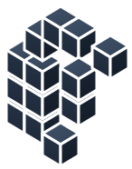

01 / ÁUDIO
Voz WebRTC cristalina
Conexões P2P diretas, codec Opus de até 384 kbps e cancelamento de eco integrado.
BAIXA LATÊNCIA
VOXELVoxel · desktop v1.0.140
Voz P2P de baixa latência, tela a 60 FPS e música tocando direto na call. Sem bots externos, sem paywall.
Role para entrar
01 · Manifesto
Tudo o que você precisa para se comunicar em alta performance, sem recursos desnecessários que deixam seu computador lento.
02 · Recursos
01 / ÁUDIO
Conexões P2P diretas, codec Opus de até 384 kbps e cancelamento de eco integrado.
BAIXA LATÊNCIA02 / STREAMING
Compartilhe a tela, o jogo ou uma janela específica em resolução nativa, com o áudio do programa.
ACELERADO POR HARDWARE03 / MÚSICA
Músicas sincronizadas na sala de voz, com playlists do Spotify e do YouTube, sem bots de terceiros.
FILA NA CALL04 / ESTRUTURA
Canais de voz e texto, fóruns temáticos, cargos e permissões granulares.
CARGOS E PERMISSÕES05 / PRIVACIDADE
Conversas ponto a ponto, envio de arquivos e histórico persistente.
SEM RASTREAMENTO06 / VISUAL
Basalto, Ardósia, Floresta e Petal Mist, sem luzes ofuscantes. Modo Leve para PCs modestos.
PERSONALIZAÇÃO03 · Motor de áudio
O motor de áudio processa o sinal em tempo real, com controle de ganho adaptativo e analisador de espectro.
| Voxel | Apps comuns | |
|---|---|---|
| Áudio de voz | 384 kbps grátis | 64–128 kbps pago |
| Tela compartilhada | 60 FPS, 1080p/2K | 30 FPS, 720p |
| Música na call | Nativo na interface | Bots externos |
| Assinatura | Nenhuma | Mensalidade |
04 · Atalhos globais
05 · Download
Apple Silicon e Intel, em empacotamento e testes.
Em breve06 · Atualizações
14 de Novembro de 2026
Menos peso na máquina.
Mais espaço para a conversa.
Música do YouTube toca como áudio puro no app (menos memória), animações pausam com a janela em segundo plano e o novo Modo Leve desliga os efeitos de vidro.
A gravação de clipes saiu do app e o atalho Alt+C fica livre para outros programas.
O player agora toca playlists e álbuns do Spotify e playlists e mixes (rádios) do YouTube: a primeira faixa começa na hora e o resto entra na fila.
O overlay volta a esmaecer depois de passar o mouse no botão de controles.
Menções com @ só destacam quem participa da conversa.
Atualização de manutenção com as mesmas correções da 1.0.131.
Windows 1.0.135; Linux permanece em 1.0.129 e Android nativo em 1.0.8.
Compartilhar tela com áudio não captura mais a voz da call; só o som do jogo ou dos programas é transmitido.
Abrir o overlay no jogo não deixa mais o app travado em "Não está respondendo".
Windows 1.0.131; Linux permanece em 1.0.129 e Android nativo em 1.0.8.
Novo aplicativo para Windows em Tauri e Rust: instalador de 19 MB, menos memória e inicialização mais rápida, com a mesma interface.
Player mostra o nome e a capa da faixa, e a busca traz resultados reais do YouTube.
Watchparty sincronizada pode ser iniciada pelo botão da chamada ou pelo Player.
Windows 1.0.130; Linux permanece em 1.0.129 e Android nativo em 1.0.8.
Campo de mensagem corrigido: botões de anexo, emoji e envio alinhados e com espaçamento uniforme.
Texto sem cortes e altura ajustada para mensagens com várias linhas. Validado em desktop, tablet e celular.
Web, Windows e Linux 1.0.129; Android nativo permanece em 1.0.8.
Links clicáveis com aviso de saída e cópia de mensagens e blocos.
Destaque de sintaxe, seleção e numeração de linhas, detecção de código colado e preferências de formatação.
Divisores de dia: Hoje, Ontem e data. Web, Windows e Linux 1.0.128; Android nativo 1.0.8.
Recuperação automática do microfone e da saída de áudio ao desconectar e reconectar o fone.
A chamada acompanha a troca dos dispositivos padrão do sistema e retoma o fone selecionado quando ele volta.
Web, Windows e Linux 1.0.127; Android nativo permanece em 1.0.8.
Ligue ou desligue sua câmera na chamada, junto com áudio e compartilhamento de tela.
FPS medido em tempo real e diagnóstico de captura, envio e recebimento. Correções na adaptação à perda de vídeo.
Web, Windows e Linux 1.0.126; Android nativo 1.0.8 com câmera na chamada.
Qualidade automática com alvo mínimo de 30 FPS e ajuste de resolução conforme a conexão.
Orçamento de envio compartilhado entre espectadores, com margem para o áudio e métricas reais de vídeo.
Web, Windows e Linux 1.0.125; Android nativo 1.0.7 com captura a 30 FPS.
Xadrez redesenhado, movimentos por arraste e seletor visual de Xadrez e Quiz com opção de encerrar.
Recuperação de senha por código enviado ao e-mail da conta.
Controles da transmissão somem quando inativos, painel de voz compacto e recuperação de áudio aprimorada.
Seletor de emojis sem recortes, com emojis comuns e personalizados, também em telas pequenas.
Partida no palco central, abertura para as outras pessoas da call e indicação clara de como entrar como adversário.
Painel de efeitos sonoros junto dos controles de microfone, áudio, transmissão e watchparty.
Xadrez com regras validadas, espectadores e placar da sessão. Quiz em grupo com cinco rodadas.
Salas temporárias com dono, convidados e limite; espaços de voz por proximidade.
Perfil próprio por comunidade e opção de retomar a call em outro dispositivo.
Saúde da chamada, diagnóstico e recuperação automática de áudio. Correção do servidor de retransmissão.
Windows, web e Linux 1.0.122; Android 1.0.6 pelo atualizador nativo.
Instalador Windows inicia em um processo independente e confirma o início antes de fechar o Voxel.
Erros de instalação aparecem no aplicativo; correção da leitura dos registros do PowerShell.
Testado com caminhos que contêm espaços e acentos. Android permanece 1.0.5 e Linux 1.0.120.
Supressão neural RNNoise no desktop e web e controles de modificação de voz redesenhados.
Medalhas com geometria, borda e relevo; missões com progresso e desbloqueio validados pelo servidor.
Atalhos editáveis e dez estilos visuais, incluindo Usinado, Linho, Ardósia, Planta e Terminal.
Até 50 emojis por servidor e painel de efeitos sonoros. O Android 1.0.5 recebe os sons da call pelo atualizador.
Verificação de conta Steam; outras plataformas dependem da configuração OAuth.
Instalador e OTA contêm somente o cliente. A atualização de segurança do servidor requer novo login.
Novo sistema completo de gerenciamento de canais: modal dedicado para edição de tópicos, limites de usuários, tipos de canal, menu contextual de ações e permissões granulares por cargo e membro.
Implementação de recuperação automática de áudio WebRTC: auto-restauração contínua de streams e chamadas em caso de queda momentânea de conexão ou instabilidade na sinalização.
Sincronização imediata de alterações de canais e permissões para todos os clientes conectados sem necessidade de recarregar a interface.
Distribuição instantânea do novo patch via instalador executável Windows e sistema OTA para clientes ativos.
Novo motor de atualização automática sem reinicialização forçada, com suporte a privilégios administrativos no Windows (C:\Program Files) e janelas de console do CMD totalmente ocultas.
Lançamento do pacote nativo .deb para Debian/Ubuntu e script de instalação automatizado via terminal curl -sSL https://app.voxelchat.com.br/install.sh | bash com atalhos no sistema.
Correção definitiva de áudio WebRTC em chamadas diretas e salas de voz, com reconexão instantânea resiliente após instabilidades de sinalização.
Indicadores dinâmicos de status "Em Voz" nas conversas diretas (DMs), no cabeçalho e na lista de membros, além de suporte a fotos personalizadas em servidores.
Persistência completa de canais e servidores em banco de dados PostgreSQL integrado, imune a reinicializações ou quedas de serviço.
Fix definitivo no instalador do updater e reinicialização suave do aplicativo.
Ocultação total de janelas de console do CMD durante aplicação de patches em segundo plano.
Correção de permissões no Windows (EPERM em C:\Program Files) com suporte a elevação e swap assistido.
Janela de atualização agora busca e exibe dinamicamente a versão exata do servidor via /api/version.
Pipeline automatizado de empacotamento com validação de integridade do arquivo .asar.
Empacotamento Debian oficial (.deb 196 MB) com ícones, lançador de desktop e dependências nativas.
Script oficial de instalação rápida via terminal: curl -sSL https://app.voxelchat.com.br/install.sh | bash.
Fallback com suporte a --no-sandbox no script de inicialização para compatibilidade em qualquer distro.
Adição da seção de downloads (Windows, Linux .deb e comando curl) na tela de login Web.
Reconexão automática das chamadas de voz e áudio após instabilidade ou queda temporária na sinalização.
Correção no áudio de chamadas associando diretamente o fluxo WebRTC a elementos de áudio nativos.
Novo status visual "Em Voz" nas conversas diretas (DMs), cabeçalho de conversa e na barra lateral de participantes.
Integração de relay TURN (CoTURN na nuvem Oracle) com negociação perfeita (Perfect Negotiation) para redes com firewall/CGNAT.
Suporte a upload e fotos customizadas para avatares de servidores.
Login automático e instantâneo na verificação de e-mail para contas existentes, eliminando timeouts de tela.
Build de produção e deploy automatizado do bundle Web para a VPS do Voxel.
Migração e persistência definitiva de servidores, canais e mensagens no PostgreSQL.
Reforço de segurança no boot do servidor com validação e fallback seguro para JWT_SECRET.
Proteção de concorrência na escrita de arquivos e manipulação segura de papéis e permissões.
Lançamento do pacote instalador .deb e script curl com instalador completo para Linux.
Fix na reprodução de áudio WebRTC em chamadas e sinalização de canais.
Indicador dinâmico de presença em chamada de voz nas DMs e barra de membros.
Integração de persistência em PostgreSQL para canais e servidores evitando perda de dados no reboot.
Blindagem do boot do servidor com verificação de integridade e fallback seguro de tokens.
Novo sistema de distribuição de atualizações OTA diretamente da nuvem Oracle.
Implementação de relay CoTURN para contornar bloqueios de operadoras e CGNAT.
07 · Perguntas
Sim. Voz em 384 kbps, tela a 60 FPS e o player de música estão liberados para todo mundo, sem plano pago.
Windows 10 e 11, Linux (Debian, Ubuntu e derivados) e Android 8 ou superior. A versão para macOS está em andamento.
O app desktop se atualiza sozinho. No Android, depois de instalar o APK, as próximas versões chegam pelo próprio app.
O Voxel roda em Tauri 2 com Rust por baixo, sem um navegador inteiro embutido. Em segundo plano, o uso fica entre 8,5% e 18% de CPU.